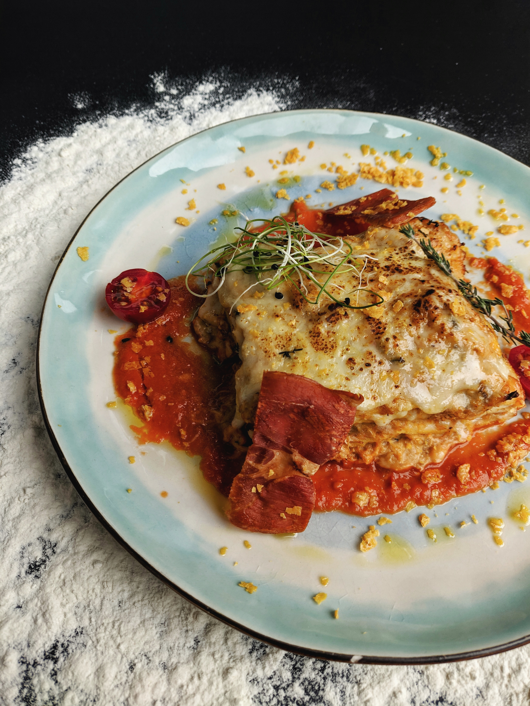

Lasagna

Description
Learn how to make this easy homemade lasagna recipe filled with tomato, meat and cheesy goodness.
Originating from Italy and dating back to the early 14th-century,
lasagne (plural form of lasagna) is a wide and flat pasta shape that is cooked and then layered with various fillings.
Ingredients
Meat Sauce
- 1 pound lean ground beef
- 2 tablespoons olive oil
- 1 medium yellow onion, chopped
- 2 tablespoons McCormick® A Hint of Sea Salt Neapolitan Pizza Seasoning
- 1 1/2 teaspoons sugar
- 1 teaspoon McCormick® Garlic Powder
- 1/2 teaspoon salt, (optional)
- 2 cans (28 ounces each) crushed tomatoes
- 1 can (14 1/2 ounces) petite diced tomatoes
- 3 tablespoons tomato paste
- 1/2 cup grated Parmesan cheese
Lasagna
- 1 container (32 ounces) ricotta cheese
- 2 cups shredded mozzarella cheese, divided
- 1/2 cup grated Parmesan cheese, divided
- 2 eggs, lightly beaten
- 2 tablespoons McCormick® A Hint of Sea Salt Neapolitan Pizza Seasoning
- 1 teaspoon salt, (optional)
- 1/2 teaspoon McCormick® Coarse Ground Black Pepper
- 1 package (8 ounces) no-boil lasagna noodles
Steps
- Preheat oven to 375°F. For the Meat Sauce, brown beef in large skillet. Remove meat from skillet and drain; set aside. Heat oil in same skillet on medium heat. Add onion, Seasoning, sugar, garlic powder and salt (if desired); cook and stir 5 to 10 minutes until onions are softened.
- Stir in crushed tomatoes, diced tomatoes, tomato paste and Parmesan cheese. Bring to boil. Reduce heat to medium-low; simmer 20 minutes. Remove from heat. Return beef to skillet and stir into sauce. Set aside.
- Meanwhile, for the Lasagna, mix ricotta, 1 1/2 cups of the mozzarella, 1/4 cup of the Parmesan cheese, eggs, Seasoning, salt (if desired) and pepper in a large bowl.
- Spread 1 1/2 cups of the sauce in bottom of 13x9-inch baking dish. Top with 1/4 of the lasagna noodles. Spread 1/3 of the cheese mixture over noodles. Top with 1 1/2 cups of sauce. Repeat layers two more times, ending with a layer of pasta and remaining sauce. Spray one side of a large sheet of foil with no stick cooking spray. Cover lasagna with foil, sprayed-side down.
- Bake 35 minutes. Remove foil. Top with remaining 1/2 cup mozzarella and 1/4 cup Parmesan cheese. Increase oven temperature to 475°F. Bake 15 minutes longer, or until cheese is lightly browned. Let stand 15 minutes before serving.